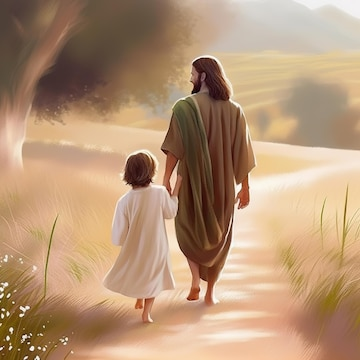

Refugees Need You!
Refugees from Africa often flee their homes due to a combination of conflict, political instability, environmental disasters, and human rights violations. Africa has experienced several ongoing conflicts, such as those in South Sudan, the Central African Republic, and the Democratic Republic of Congo, which have forced millions of people to abandon their homes. Additionally, climate change has exacerbated these crises, leading to severe droughts, floods, and desertification, which impact livelihoods and contribute to displacement. Refugees from Africa are not just fleeing violence but also extreme poverty, food insecurity, and lack of basic resources, making their plight all the more urgent.
Refugees Need You! You can change the world one smile at a time!

- Artwork
- Examples
- Jesus Christ
- Bible Stories
- Book of Mormon Stories
- Konigo
- Saman
- Bashige
- Nathanael
There is work to do!
In many African countries, refugees face significant barriers upon arriving in host nations, including
overcrowded
camps, limited resources, and a lack of legal protection. These camps are often poorly equipped to provide
refugees
with essential services like healthcare, education, or employment opportunities. Refugees from Africa frequently
find themselves living in dire conditions, facing overcrowding, inadequate sanitation, and limited access to
clean
water. Many African refugees are forced to wait for years without a clear path to resettlement or integration
into
their host countries. This prolonged uncertainty contributes to mental and emotional distress, making it harder
for
them to rebuild their lives.

Why should you help?
You are needed
Healthcare is another critical need for African refugees. Many refugees arrive with injuries, chronic health conditions, or untreated diseases, often exacerbated by the harsh conditions they endured during their journey. African refugees are also at a heightened risk for malnutrition, infectious diseases, and mental health disorders due to the extreme conditions they face. In refugee camps, healthcare resources are often scarce, leaving many without access to adequate treatment. Your help is vital in ensuring that refugees can receive medical care, mental health support, and essential vaccinations to protect their health.
Artwork can change lives

I love this image! Here are similar pieces of artwork!
Economic support is crucial for refugees from Africa to rebuild their lives. Many refugees arrive with little or no resources and are dependent on humanitarian aid. However, aid alone is not enough for long-term survival. Refugees need access to jobs, financial support, and opportunities for self-sufficiency. Supporting microfinance programs or initiatives that help refugees start businesses or gain employment can significantly improve their lives and help them contribute to their new communities. Your help can ensure that African refugees are not only surviving but thriving in their new environments.
Especially artwork of Jesus Christ
Lastly, refugees from Africa often face significant discrimination and xenophobia in host countries. They may be marginalized due to their ethnicity, nationality, or refugee status, making it difficult for them to integrate into society. This discrimination can limit their access to education, healthcare, and employment, perpetuating a cycle of poverty and exclusion. Your advocacy and support can help challenge these stereotypes and create more inclusive environments for refugees. By standing up for their rights and providing practical assistance, you can help African refugees build a better future and find dignity and belonging in their new homes.
Back to top